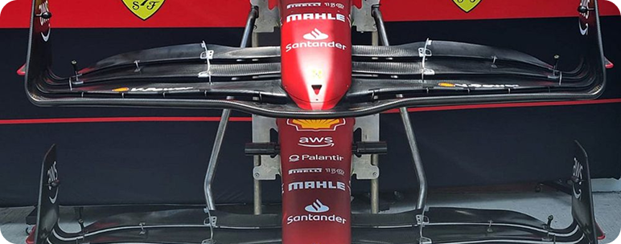

01
Alerón delantero
Elemento aerodinámico ubicado en la parte frontal del monoplaza. Su función principal es generar carga aerodinámica hacia el suelo, aumentando la adherencia en las curvas.
También canaliza el aire hacia los costados y el fondo del coche para optimizar el flujo aerodinámico.
Dato relevante: Cada equipo diseña su propio alerón según el circuito; uno con más ángulo genera más carga, pero también más resistencia al aire.
